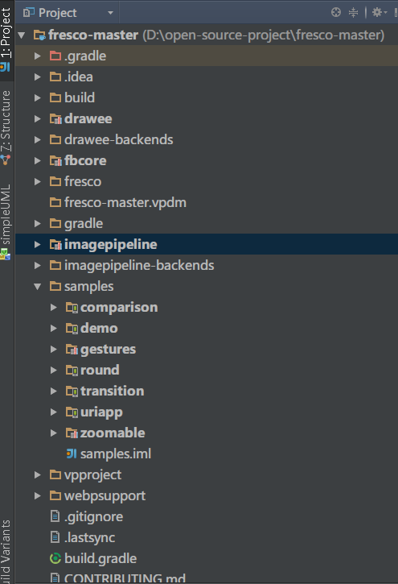
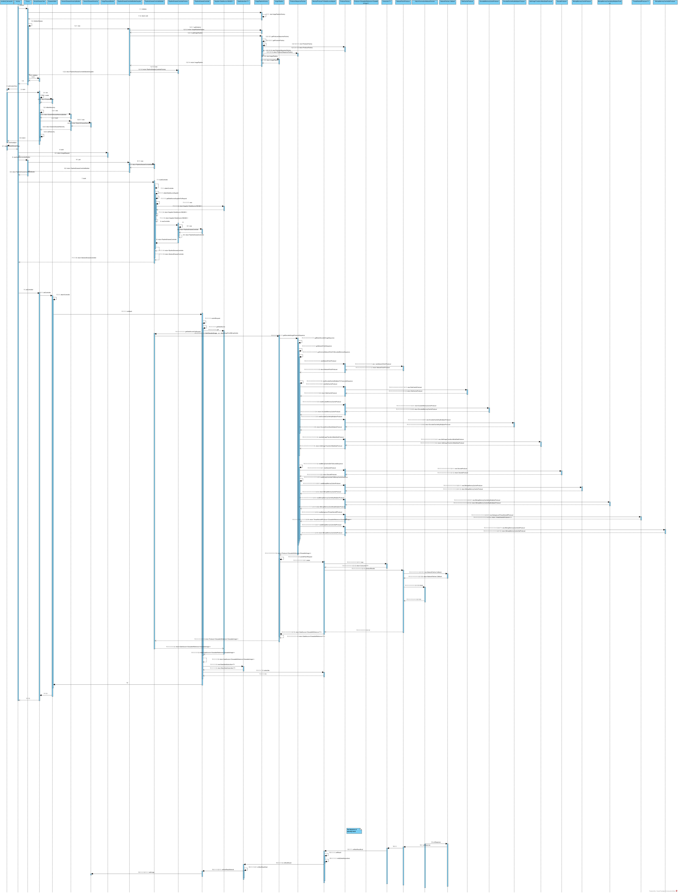
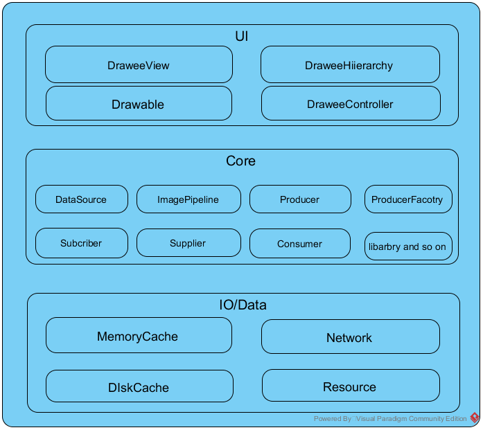

【Android】Fresco图片加载框架（一）————源码简要分析

/**
* 本文原创
* BUT
* 可以随意转载到任何网站或者App
* BUT
* 转载也要按“基本法”
* SO
* 请注明原文出处和作者
*/
fresco官方高大上介绍（1）（注意：前方有堵墙）
fresco官方高大上介绍（2）（注意：前方有堵墙）
前言
虽然标题是fresco分析（一），但是并不代表会有2345的啦。
内容基本按流水式发展，大体和自己分析这个库的流程一致，代码很久前大概看了一天，但是没有做任何记录，这次算是权当记录一番，复看了半天，但是，画图画得想撞墙（逃。
然而，图可能画的并不很规范，看懂就行。
图片加载库不少，主流volley，universal imageloader， glide，picasso，fresco。
看上fresco的原因：
- facebook出品
- 代码多啊
介绍：
fresco，facebook开源的针对android应用的图片加载框架，高效和功能齐全。
- 支持加载网络，本地存储和资源图片；
- 提供三级缓存（二级memory和一级internal storage）；
- 支持JPEGs，PNGs，GIFs，WEBPs等，还支持Progressive JPEG，优秀的动画支持；
- 图片圆角，scale，自定义背景，overlays等等；
- 优秀的内存管理；
- 2.3（Gingerbread）或以上。
（其实上面都是多余的啦~~~）
正文开始
本文涉及得图片可能都不是太规范，如果有强迫症，请忽略
内容没有大量代码，怕长篇累牍，所以只能是个大概，慎读。
工程
clone代码下来，工程的样子大概就是这样的了：

简略说一下project structure：
- sample module下面是例子，里面有好几个例子工程，例如demo等；
- drawee module，主要是ui相关的东西，例如DraweeView， drawable相关的类等；
- imagepipeline module，整个工程的核心，图片加载，内存、缓存管理，bitmap处理等等核心逻辑；
- fbcore module，可以说是基础类库，一些工具类，基础接口，文件处理等等；
- drawee backends，就是基于drawee module里面的某些接口的具体实现，例如如果曾经使用volley的，可以继续使用volley作为图片加载的框架一部分去做加载图片；
- imagepipeline backends，也是基于imagepipeline module中某些接口的具体实现，例如http请求是使用okhttp的，可以继续使用okhttp实现；
project structure大概就是这样，红色标出的是最需要关注的三个module，其他都是easy job。
用法：
直接上代码：
xml中：
<com.facebook.drawee.view.SimpleDraweeView android:id="@+id/baseline_jpeg" android:layout_width="match_parent" android:layout_height="0dp" android:layout_weight="1" fresco:actualImageScaleType="fitCenter" />
代码：
1 Uri uri = Uri.parse("http://省略");// 2 ImageRequest request = ImageRequestBuilder.newBuilderWithSource(uri) 3 .setProgressiveRenderingEnabled(true) 4 .build(); 5 DraweeController controller = Fresco.newDraweeControllerBuilder() 6 .setImageRequest(request) 7 .build(); 8 mProgressiveJpegView.setController(controller);
代码比较简单，比较容易懂，但是相对其他的图片加载框架而言，感觉这样的调用还是相对复杂。当然自己可以继续封装，减少不必要的大量重复的代码。
流程分析：
分析流程基本是自己分析开源项目主要做的第一件事情，一遍流程下来，大概就能摸索清楚了。
然后，就有了下面这张图，图大，手机党慎点~~~
想看细节点，可点击看大图或者下载。。。。

（流程选的是demo例子里面网络加载图片的流程，其他的大概差不多。）

（流程图里面省略掉很多细节，但是主要的流程都描述出来了）（图画的我啊。。。。）
一个完整的请求，到响应流程就是这样，相当的复杂，有耐心可以仔细的看看（这渣图也很难有耐心的了）。
虽然复杂，但是确实从实现上看，扩展性和功能性来看，还是相当完善的，正如facebook自己所讲：
Several excellent open source libraries exist
that
perform these sequences — Picasso, Universal Image Loader, Glide, and Volley, to name a few. All of these
have made important contributions to Android development. We believe our new library goes
further
in several important ways.
关键点：
关键点的分析，主要是着眼于一些关键的接口和类。这里分module来进行。
先分析drawee module的，主要下面三个：
- DraweeView
- DraweeHierarchy
- DraweeController
这三个类的关系大概就是一个MVC的模式：
- DraweeView继承ImageView，即V，负责展现DraweeHierarchy；
- DraweeHierarchy是M，可以认为它由多层的drawable组成，每一层为图片提供某种特定的功能，例如scale，fade-in，layering等等；
- DraweeController是C，处理核心的控制逻辑。例如向pipeline（或者其他图片加载库)发出请求，并接收相应事件，并根据不同事件控制DraweeHierarchy；还有，从DraweeView接收事件，然后做出取消网络请求、回收资源等操作。
具体细节这里不展开讨论，但是得提一个就是，DraweeView设置图片使用的并不是setBitmap方法，所有的操作都是对DraweeView的drawable进行操作，不管是更新，圆角等等。
然后分析fbcore：
- DataSource
- DataSubscriber
fbcore里面基本都是一些基础类，这两个接口也不例外。
- DataSource，Java里面的Futures的替代品，从字面意思就知道，它代表数据来源，它和Futures不同的是，可以有一系列的result，而不是一个。
- DataSubscriber，和DataSource对应，用于接收从DataSource返回的结果，从字面意思也能知道大概作用
DataSource的任何状态改变，DataSubscriber理应接收相应的事件，然后处理。
简单理解就是，DataSource代表数据处理流程和结果，DataSubscriber就像Callback一样，不断接收事件。
这两个都是接口，有很多的不同实现，这里不讨论。主要的两个实现类是AbstractDataSource和BaseDataSubcriber，其他的实现基本都是继承这两个抽象类的。
最后是imagepipeline，最核心的模块。
虽然是核心模块，但是核心模块其实也就几个关键点，面向接口编程指导下，基本上找到关键的接口，整个框架就清晰了。
- ImagePipeline和ImagePipelineConfig
- Producer和Consumer
- ImagePipeline是整个module的entry point，获取图片的主要接口都是通过它来调用 。
- ImagePipelineConfig顾名思义，是用来配置ImagePipeline的属性的，例如内存缓存配置，本地文件缓存配置，bitmapconfig等等。
Producer和Cosumer明显的生产者和消费者模式了。Producer在imagepipeline在有各种各样的实现，超过10种以上。例如包含NetworkFetcherProducer，LocalAssetFetcherProducer，LocalFileFetchProducer等等。
而这些producer就是最终”产出“图片的地方，上层图片的来源（DataSource<T>）就是从此处得到的。当然producer也包含一些具体的处理，例如对图片进行encode，resize等等。不同的处理可能对应不同的producer。
而众多producer都可以通过ProducerFactory这个工厂类获得。而设计上有个巧妙的地方就是，producer往往是一层嵌一层的，什么意思，基本就是类似于我们平常用的io
stream一样：
new BufferedReader(new InputStreamReader(new FileInputStream(file)));
就是通过这种方式，底层上来的原始数据，一层层的进行特定的处理，然后产出一个最后的结果，便于上层直接进行使用。例如：
public <T> ThreadHandoffProducer<T> newBackgroundThreadHandoffProducer( Producer<T> inputProducer) { return new ThreadHandoffProducer<T>( mExecutorSupplier.forLightweightBackgroundTasks(), inputProducer); }
参数也是一个producer，然后可以不断的嵌套。这个在impineline里面叫做producer sequence（producer链？）。对应的有ProducerSequenceFactory这个工厂类，用它来获得不同的producer
sequence。
Consumer就是用来接收producer的产出结果的，最后一步步回调回到上层ui。
运作：
整个库运行的流程（其实是一个activity diagram）简略如下（详细的可以加倍耐心参看上面的sequence
diagram）：

框架：
框架大概是这样（个人总结）：


ImagePipeline框架图
其他：
由于整个库的东西包含很多，功能性和扩展性很强，而且有很多巧妙的设计，本文无法一一详述，上面分析的都是库的整体框架，虽然整个库不小，但是其实架子就上面一点东西而已。
下面罗列出其他一些需要关注的key point：
- 缓存机制（三级缓存）；内存缓存是如何管理的，文件缓存是怎么存储和读取的；
- 内存管理，防止OOM，主要是bitmap等内存占用大的对象处理；主要用到的是SharedReference这个类,相关的还有CloseableReference，整个库随处可见，其实就是一个支持引用计数的对象，类型于C++的shared_ptr，当计数为0时，就可以释放。
- 不同的图片格式对应的处理方式，图片处理涉及到一些第三方的native库，例如giflib，libjpeg，libpng等；
- 各种不同的drawable的实现，特别是progressive drawable和gif这些复杂的实现，和DraweeHierarchy对图片切换的实现；
- 多线程处理。为什么叫pipeline呢？这也是值得深究的。pipeline对于熟悉操作系统的都知道，现代cpu的架构都是pipelined的，以实现parallelism。个人觉得，imagepipeline也是有这个意思，把一个任务拆分成多个独立单元，然后并行处理。官方文档中也有所提及。有如图：

- 整个库实现设计上，各种设计模式乱入。builder，factory，wrapper，producer/consumer，adapter等等。
- 其他细节，自己发掘。。。。
总结：
fresco确实提供了很强大的功能，支持上也很完善。
但是，对比其他类似库还是不同的，自然优缺点都存在。
优缺点参考的是：http://stackoverflow.com/questions/29363321/picasso-v-s-imageloader-v-s-fresco-vs-glide，这里面对几个图片加载库进行了对比，fresco优缺点如下：
(-)
- Huge size of library
- App freeze while loading big images from internet into ListView
- Huge size of cache
(+)
- Pretty fast image loader
- A lot of functionality
- Huge size of library
- App freeze while loading big images from internet into ListView
- Huge size of cache
(+)
- Pretty fast image loader
- A lot of functionality
fresco优缺点，由于没有在实际项目中使用，所以没有详细数据，有待继续确认，但是库确实比较大，这是比较显而易见的。
~~~文卒~~~